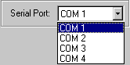

Trouble Shooting
Some users find that they cannot immediately establish a connection from the
PC to the calculator. The easiest way to check whether you have a valid
connection is to perform a screen capture.
If your connection is not working then try the following:
- Replace the batteries in your calculator. Loss of communication with
the PC is often the first symptom of low batteries, even before the indicator
appears in the calculator window.
- If you receive a message when you first start the
program that it cannot use the serial port COM1, then try using any of the
others on the list obtained by clicking on the list box shown below
right.

- Your serial port is in use by another program. External modems often
use the COM1 serial port by default, as does some equipment used with games.
You may be able to fix this by changing to another serial port once the
program is running.
- A problem sometimes reported is the lack of a free serial port.
These ports are usually located on the back of the computer and may be
labelled COM1 or COM2. Most computers have two serial ports but some
users find that the computer's mouse is using COM1 and that the COM2 port has
a different plug that will not fit the cable. This is easily fixed. Any
computer store will be able to sell you an adaptor plug very cheaply.
Take the cable with you when you visit the store. As a last resort, you
may need to consider purchasing a 'bus mouse' which does not require access to
the serial port.
- Many schools have strict security systems on their computers. This may
include disabling the serial ports. Check with your network
administrator to see if this may be causing your problem.
- Reboot the computer and try again. If you are still unable to establish
communication then we can only suggest that you consult an expert. An
expert in your school with hands-on access to the computer may have more luck.
There may even be a problem with the COM port on your computer. Try
a different one if possible. Please believe us that the software
does work!